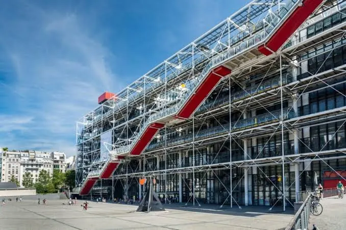

BnF Richelieu
프랑스 국립도서관의 옛 본관이다.

25.6 Centre Pompidou 대체로 두었다. 개보수 폐관은 2030년 무렵까지 이어질 예정이라 이번 여행과는 접점이 없다.
⚠ 퐁피두는 2025년 9월 22일에 문을 닫았고 2030년 재개관이 목표다 — 복수 출처로 확인했다(공식 · France 24 · Domus · ArchDaily). 2026년 체류 기간 내내 본관은 닫혀 있다. 24. 추천등급이 이 항목을 방문 불가로 적은 것이 맞았다. 다만 「세잔과 우리」의 공동주최 기관에 퐁피두 센터가 포함돼 있다는 점에서, 소장품이 그랑팔레 전시로 나와 있을 가능성이 있다.
즉 퐁피두에 가지 않아도 그 컬렉션의 일부를 Day 34에 본다.
프랑스 국립도서관의 옛 본관이다.

옛 곡물거래소를 안도 다다오가 개조한 현대미술관이다

모네가 정원을 만들고 수련을 그린 마을이다.

폴 세잔이 한 세기가 넘는 예술 창작에 끼친 예외적 영향을 탐구하는 전시다.

'라틴'은 학생들이 라틴어로 말하던 동네라는 뜻이다

Day 30 (9/27 일) · Day 35 (10/2 금)